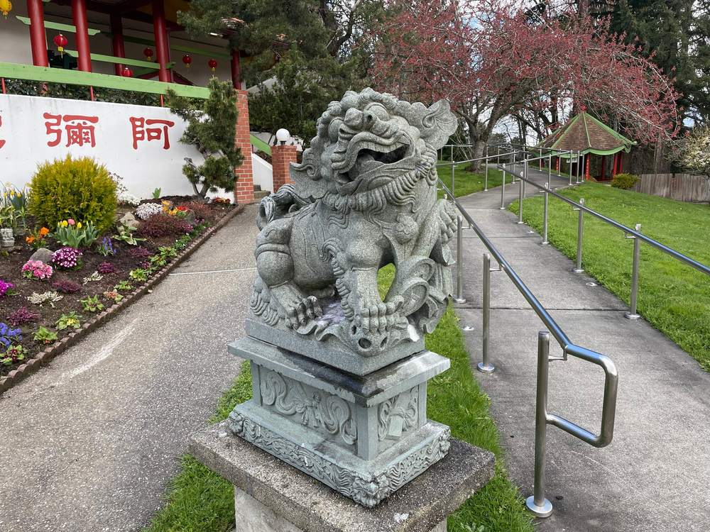
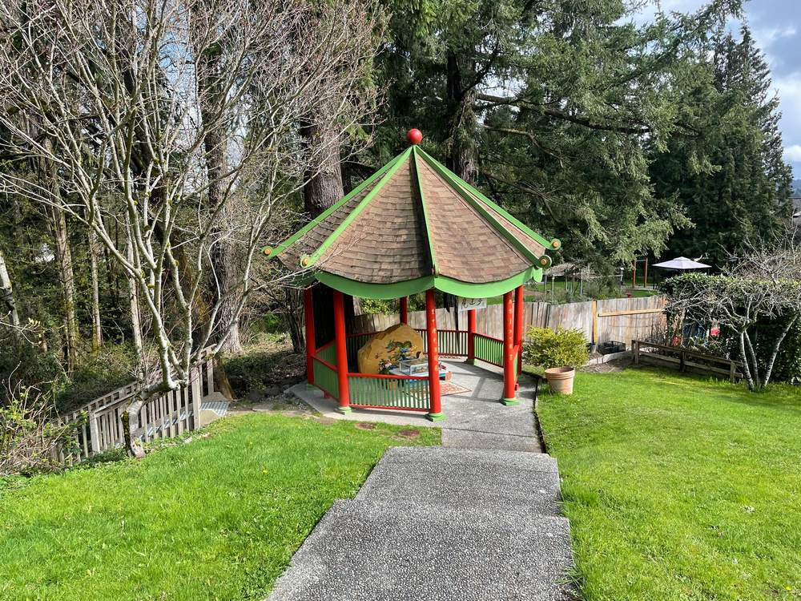
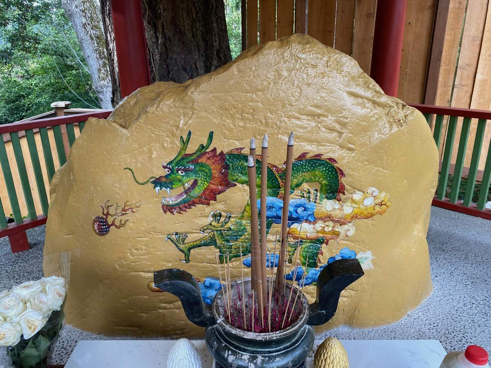
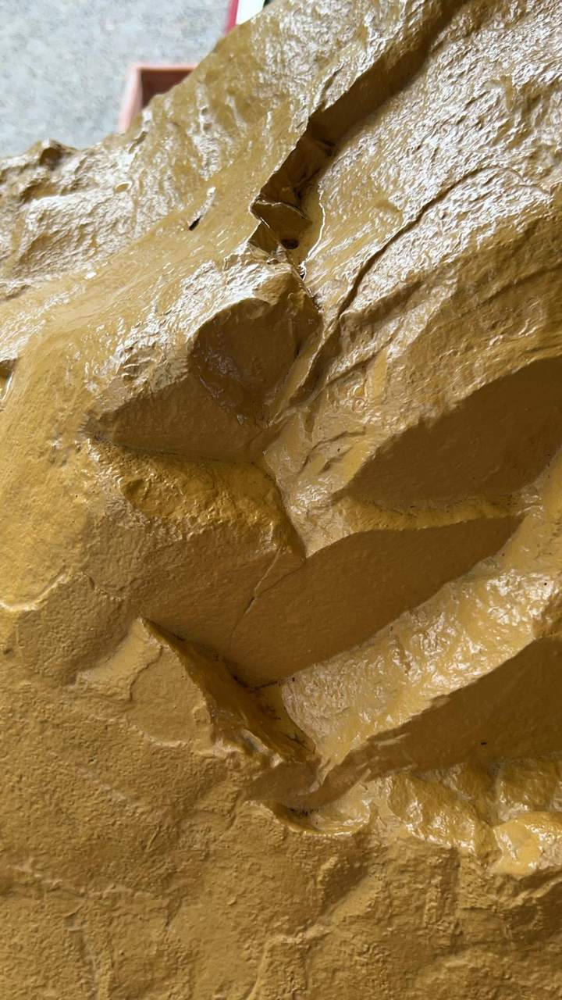
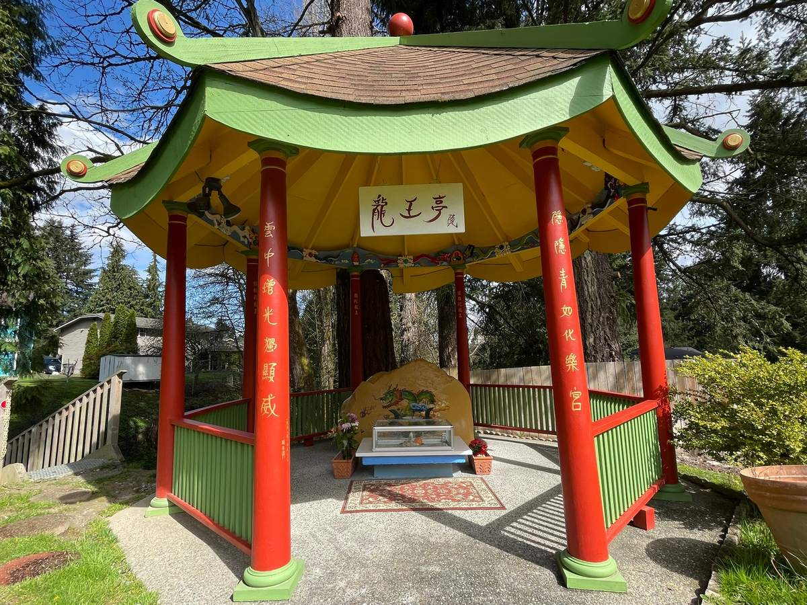

When Ling Shen Ching Tze Temple in Redmond was about to be built, there was a little-known story concerning the Dragon Deity Stone, which stands on the temple’s dragon side — the left side when facing outward from the main hall.
Beneath the Main Hall
As excavation work began for the foundation of the main hall, the Dragon King spoke to Grandmaster Living Buddha Lian Sheng, saying, “In a few days, they will dig into my dragon palace. I humbly ask Grandmaster to help protect it.”

At the time, Master Lian Shi was supervising construction on site. As workers excavated the centre of the main hall’s foundation, they unearthed an enormous natural boulder — the stone now known as the Dragon Deity Stone. Master Lian Shi immediately reported the discovery to Grandmaster.
As soon as Grandmaster heard this, he said, “Good. Take care of it immediately and move it to the dragon side.”
This is a story that few people know. The great natural boulder discovered beneath the main hall remains at Ling Shen Ching Tze Temple today, where it is enshrined within the Dragon King Pavilion.

A Palace Within the Stone
Grandmaster has explained that although ordinary eyes see only a stone, within it is the Dragon King’s palace. To those able to perceive it, the dragon palace is magnificent, resembling a golden palace and inhabited by many dragon deities.

Offerings to the Dragon King
Visitors may pay their respects and make offerings to the Dragon King at the pavilion. It is said that this Dragon King is particularly fond of milk.

On some occasions, after milk has been offered and devotees have circumambulated the Dragon Deity Stone, water has reportedly been seen emerging from the stone.

Prayers for Rain
The Dragon King of Ling Shen Ching Tze Temple is compassionate and especially responsive to prayers for rain. Whenever Grandmaster travels abroad to propagate the dharma, whether in Indonesia or other countries, if there is a drought, as soon as Grandmaster prays for rain, rain immediately falls.
Most recently, in August 2026, Grandmaster visited the Dragon King Pavilion and prayed for rain to help relieve wildfires affecting Washington State and Canada. Rain subsequently fell in Vancouver.
The Dragon King has a deep affinity with the True Buddha School, and this is where that connection originated.
Story and photographs courtesy of Ling Shen Ching Tze Temple (Seattle Leizang Temple). Read more about nagas, rain and the weather.